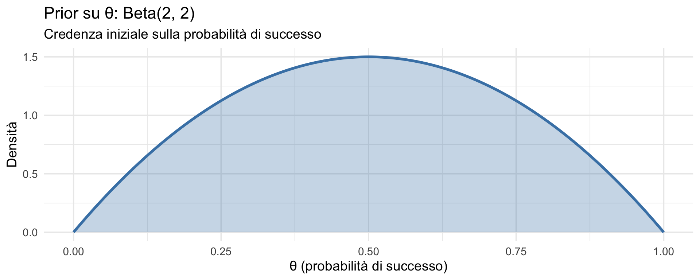
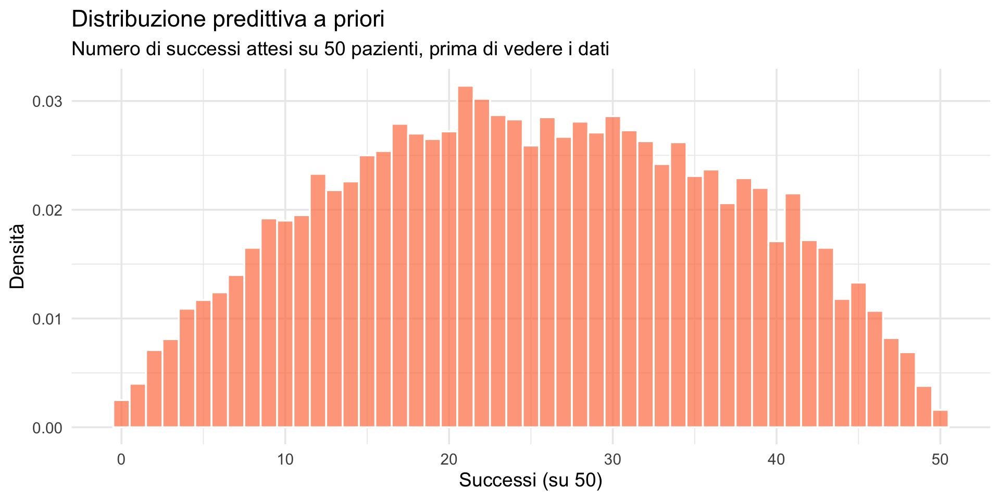
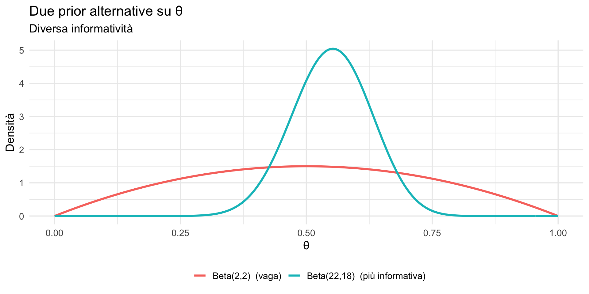
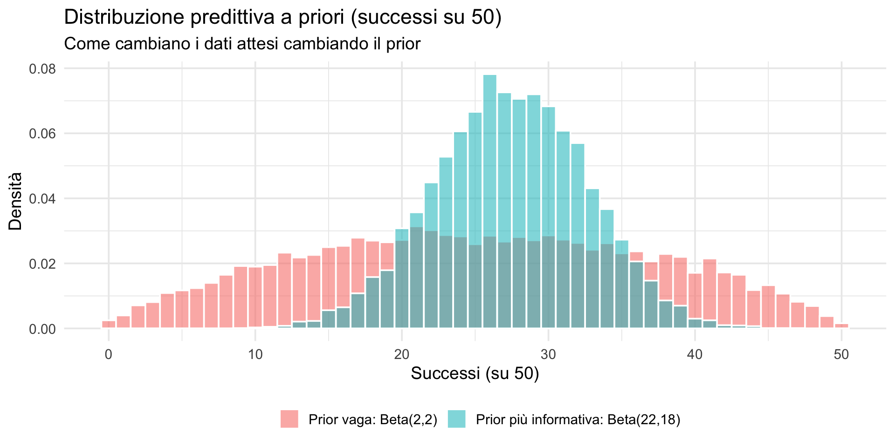
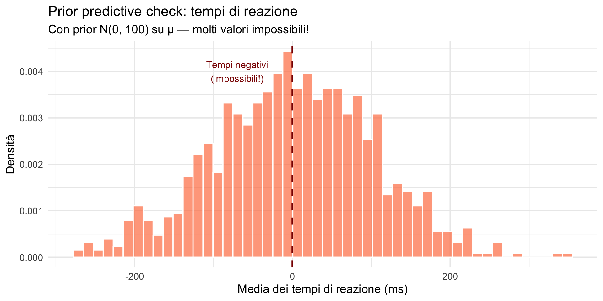
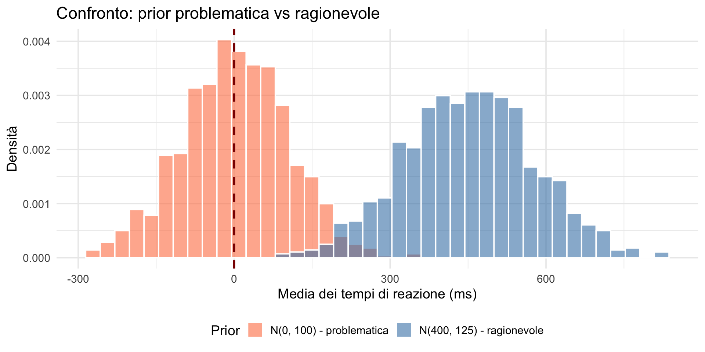
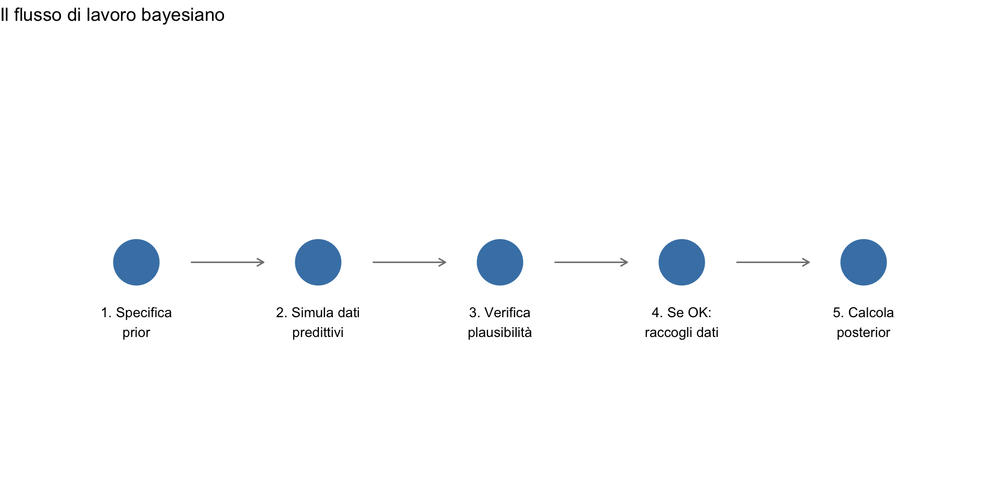

![]()
θ estratto = 0.328 Successi simulati su 50 = 17 Cosa ci aspettiamo prima di vedere i dati — Segmento 1
15 febbraio 2026
Nella prima metà del corso abbiamo costruito, passo dopo passo, la macchina dell’inferenza bayesiana:
Lezioni 17–18: prior, verosimiglianza e posterior. L’aggiornamento sequenziale.
Lezione 19: le famiglie coniugate — Beta-Binomiale e Normale-Normale.
Lezione 20: sintetizzare il posterior — stime puntuali, ETI, HDI e le domande probabilistiche dirette.
Oggi ci chiediamo: come facciamo a sapere se il modello ha senso prima ancora di raccogliere i dati?
Prima di raccogliere dati, ogni ricercatore dovrebbe chiedersi:
“Se il mio modello fosse vero, che tipo di dati mi aspetterei di osservare?”
Questa domanda apparentemente semplice è potentissima:
Finora abbiamo scelto le distribuzioni a priori ragionando sui parametri del modello:
Questo approccio è corretto, ma spesso non è il più naturale.
Molto più spesso, infatti, abbiamo intuizioni sui dati osservabili:
La domanda allora diventa: la prior che ho scelto sui parametri è coerente con ciò che mi aspetto di osservare nei dati?
La distribuzione predittiva a priori risponde proprio a questa domanda:
“Quali dati potrei osservare, prima di aver visto alcun dato, se il mio modello fosse corretto?”
Formalmente:
\[ p(y) = \int p(y \mid \theta)\, p(\theta)\, d\theta, \]
cioè, la distribuzione dei dati ottenuta mediando il modello sui possibili valori del parametro, pesati dalla distribuzione a priori.
Possiamo pensare la distribuzione predittiva a priori con la seguente simulazione mentale:
La distribuzione dei dati così generati è la distribuzione predittiva a priori.
È ciò che il modello si aspetta di osservare prima di vedere i dati reali.
Si noti che:
In altre parole, la distribuzione predittiva a priori combina:
L’integrale nella definizione di \(p(y)\) formalizza esattamente questo processo di simulazione ripetuta:
\[ p(y) = \int p(y \mid \theta)\, p(\theta)\, d\theta. \]
Pensiamo a un valore fissato \(y\).
Ogni possibile valore del parametro \(\theta\) assegna a \(y\) una probabilità diversa tramite \(p(y \mid \theta)\).
La probabilità complessiva di osservare \(y\) deve quindi:
La distribuzione predittiva a priori è una media pesata delle distribuzioni \(p(y \mid \theta)\):
L’integrale
\[ p(y) = \int p(y \mid \theta)\, p(\theta)\, d\theta, \] somma tutti questi contributi, pesandoli correttamente.
Il procedimento di simulazione fa esattamente questo:
Ripetendo il procedimento molte volte, la frequenza con cui osserviamo ciascun valore di \(y\) approssima l’integrale.
L’integrale non è altro che il limite ideale di questo processo di campionamento.
La distribuzione predittiva a priori descrive ciò che otteniamo prima osservando un parametro dalla prior e poi osservando i dati dal modello.
L’integrale
\[ p(y) = \int p(y \mid \theta)\, p(\theta)\, d\theta \] formalizza esattamente questa idea.
Considerato un singolo valore del parametro \(\theta\), il modello \(p(y \mid \theta)\) determina in modo univoco la distribuzione dei possibili valori della variabile casuale \(y\).
Tuttavia, \(\theta\) non è noto: la distribuzione a priori descrive quanto siano relativamente plausibili i diversi valori che \(\theta\) può assumere prima di osservare i dati.
La distribuzione predittiva a priori si ottiene allora così:
Il risultato di questa media pesata è la distribuzione predittiva a priori.
Per concludere,
la distribuzione predittiva a priori descrive ciò che il modello si aspetta di osservare, tenendo conto sia dell’incertezza sui parametri sia della variabilità dei dati.
Prima di guardare i dati satellitari, un meteorologo potrebbe dire:
“A marzo a Firenze, sulla base della mia esperienza, mi aspetto temperature tra 5 °C e 18 °C.”
Se il suo modello considerasse plausibili −30 °C o +50 °C, il problema non sarebbero i dati, ma il modello.
Allo stesso modo, la distribuzione predittiva a priori ci permette di verificare se:
È uno strumento fondamentale per evitare prior “al buio”.
Un’azienda farmaceutica sta testando un nuovo farmaco per l’ansia. Prima dello studio clinico vogliono verificare se le assunzioni del modello sono ragionevoli.
Modello:

La Beta(2,2) esprime una credenza iniziale “moderata”: valori estremi (vicino a 0 o 1) sono meno plausibili, ma non esclusi.
Prima di raccogliere dati, vogliamo chiederci:
Questa è la distribuzione predittiva a priori:
\[ \theta \sim \text{Beta}(2,2), \qquad Y \mid \theta \sim \text{Binomiale}(50,\theta). \]
θ estratto = 0.328 Successi simulati su 50 = 17 Interpretazione: abbiamo generato un possibile esito coerente con il prior.
forOra ripetiamo lo stesso esperimento molte volte, passo per passo:
theta successi
1 0.328 17
2 0.835 38
3 0.881 43
4 0.127 4
5 0.636 29
6 0.498 33
7 0.414 26
8 0.283 11
9 0.329 9
10 0.416 19Ogni riga è uno studio simulato: prima estraiamo \(\theta\), poi generiamo i successi.
È lo stesso algoritmo, solo più compatto:
Ogni simulazione produce un numero di successi \(Y\) su 50.
La variabilità riflette due fonti:
Questo insieme di valori \(Y\) è la distribuzione predittiva a priori.

Media: 25 successiIntervallo 95%: 4 - 46 successiInterpretazione:
“Questa predittiva a priori produce risultati plausibili per un ansiolitico?”
Se i ricercatori si aspettano che farmaci simili abbiano tassi tra 40% e 70%, questa prior potrebbe essere troppo vaga (produce anche scenari poco plausibili).
Se l’esperienza suggerisce che farmaci simili hanno tassi di successo tra 40% e 70%, possiamo usare un prior più concentrato:
\[ \theta \sim \text{Beta}(22,18) \]
Ricordate la Lezione 19: nella famiglia Beta-Binomiale, la “forza” del prior è \(\alpha + \beta\).

Ora simuliamo, per ciascun prior:

Prior vaga (Beta(2,2)):
Media successi: 25 95%: 4 - 46 Con Beta(2,2) la predittiva a priori è molto ampia: ammette con probabilità non trascurabile scenari estremi, dal quasi fallimento al successo eccezionale.
Con Beta(22,18) la prior su \(\theta\) è più concentrata, con la maggior parte della massa tra 40% e 70%. Questo produce una predittiva sui dati più concentrata, pur includendo ancora la naturale variabilità campionaria (≈ 17–37 successi su 50).
Messaggio chiave: la prior restringe ciò che crediamo plausibile per il parametro, non elimina la variabilità nei dati osservabili.
L’intervallo sulla prior riguarda \(\theta\);
l’intervallo predittivo riguarda i dati.
Il secondo è sempre più largo del primo.
Confrontare la distribuzione predittiva a priori sotto prior diverse — come abbiamo appena fatto — è una forma di analisi di sensibilità: verifichiamo quanto le nostre conclusioni dipendono dalla scelta del prior.
Questo tema è trattato in modo più formale nel materiale didattico. La lezione di oggi vi dà lo strumento operativo per condurla: simulare e confrontare.
Un prior non è semplicemente un’opinione:
è una scelta consapevole che definisce i tipi di dati che ci aspettiamo di osservare, prima di raccoglierli.
Se il controllo predittivo a priori rivela previsioni “strane” o irrealistiche, questo è un segnale fondamentale che:
In sintesi: il controllo predittivo a priori trasforma un’assunzione astratta (il prior) in previsioni concrete e verificabili, aiutandoci a identificare e correggere problemi nel modello prima di osservare i dati reali.
Le alternative sono chiare:
Il prior predictive check è una procedura sistematica:
Una prior produce dati implausibili quando:
Il prior predictive check non richiede dati reali — è uno strumento di validazione del modello.
Supponiamo di modellare i tempi di reazione in un compito cognitivo.
Modello (sbagliato):
# Simuliamo dalla prior
n_sim <- 1000
n_soggetti <- 30
# Prior molto vaga su mu
mu_sim <- rnorm(n_sim, mean = 0, sd = 100)
# Per ogni mu, generiamo un campione di tempi di reazione
dati_sim <- matrix(NA, nrow = n_sim, ncol = n_soggetti)
for (i in 1:n_sim) {
dati_sim[i, ] <- rnorm(n_soggetti, mean = mu_sim[i], sd = 50)
} [,1] [,2] [,3] [,4] [,5] [,6] [,7]
[1,] 22.35421 -56.15567 -33.04860 55.75622 23.972206 -19.20350 -34.52482
[2,] -64.67673 22.52654 -35.02890 -64.60356 2.049089 23.02045 -66.87278
[3,] 131.35520 12.62886 88.23322 68.25835 9.318619 -49.03206 61.03544
[4,] 51.79731 51.94372 157.80321 52.94261 99.532152 39.89562 27.08713
[5,] 225.81379 147.23306 66.89929 166.03681 127.526875 121.21727 150.13320
[6,] 106.49839 37.29320 57.13866 170.49877 71.216336 72.78456 88.38554
[,8] [,9] [,10] [,11] [,12] [,13]
[1,] 40.655323 55.237687 6.605161 10.215294 -23.58363 48.106295
[2,] -28.264224 34.808762 -126.442036 -1.556355 -15.74137 36.504114
[3,] -4.851955 99.399948 48.468043 26.060685 40.31991 -2.450019
[4,] 44.899326 148.635944 90.470109 38.287155 145.97316 108.345469
[5,] 115.395190 317.186118 256.111915 165.992383 248.41137 195.931063
[6,] 156.135333 -4.602193 40.128923 40.661848 43.97152 113.299858
[,14] [,15] [,16] [,17] [,18] [,19] [,20]
[1,] 110.38660 74.03149 104.98150 -49.57709 124.42402 66.00849 8.843284
[2,] -55.73329 68.88373 14.17952 -96.58628 -77.95608 -76.25850 -46.788748
[3,] -21.53256 40.10035 56.58522 -15.58852 109.85548 16.36793 104.486611
[4,] 87.17758 51.40600 120.27202 128.30301 42.70696 93.87880 98.492895
[5,] 182.03884 146.37459 77.83714 88.32402 222.12582 273.33661 187.906539
[6,] 91.75940 103.97224 86.77061 28.60182 76.91226 153.47247 123.714594
[,21] [,22] [,23] [,24] [,25] [,26]
[1,] 62.7465541 1.776402 -24.69295 110.413165 -2.225543 27.703439
[2,] -53.0548134 5.315580 -104.83028 3.755434 -4.881831 -33.839535
[3,] -0.1363173 28.601427 -16.88324 2.132766 117.347302 -7.202241
[4,] 139.2443145 112.216977 95.80202 144.582038 109.536459 -19.441231
[5,] 261.8677513 281.778732 238.68047 116.291243 149.089979 144.960041
[6,] 44.2224271 -3.171245 78.14512 16.954551 71.059749 123.139856
[,27] [,28] [,29] [,30]
[1,] -42.91923 11.812454 54.914534 100.54222
[2,] 51.47085 -5.228591 -9.560506 -45.11705
[3,] 32.68848 49.419979 12.671986 94.20710
[4,] 79.53993 116.066151 78.083222 103.33632
[5,] 216.81006 137.267492 99.844194 263.59360
[6,] 100.52815 145.815727 66.694162 49.49694 [1] 27.8518501 -25.0169129 37.7288661 87.9605466 179.7338478
[6] 78.3833194 51.2082659 -47.6798361 108.3775163 -136.3636068
[11] 59.8509600 -107.2305573 1.3295655 -55.9896901 0.5537415
[16] 92.7975053 69.2564861 91.7962874 59.0986404 15.9086173
[21] -131.5630453 -49.8870225 -52.5076009 -124.2423001 -11.5426112
[26] -3.3041531 -7.2439278 -62.9507071 40.9362605 -121.1823768
[31] 112.8341824 14.8432430 -171.4165469 11.9073518 280.5405506
[36] 29.1372742 142.5194724 136.4083248 71.3468149 -79.4354520
[41] 63.3682014 64.5168182 -73.6895651 -11.7666911 -104.4270186
[46] -261.8254088 71.7894707 78.6544696 81.1218425 42.5911327
[51] 86.1032992 107.9707653 -46.0890530 7.4534384 -123.1050798
[56] 109.8575475 -32.2546855 90.0538040 -16.0174368 45.8635694
[61] -56.0557458 -117.5528268 111.1237750 -118.3054937 29.9964612
[66] 2.9846094 114.2230933 101.0243809 -8.3477164 142.2217620
[71] 76.3722394 -214.5324962 26.0356729 70.6738498 29.1599917
[76] -198.3427963 93.2265430 84.7985145 103.4299585 85.6968145
[81] 44.8743854 -40.8057078 75.1876705 -110.6665763 -80.5768293
[86] -55.9692868 -76.9620391 -61.8937726 8.0767219 3.9609537
[91] 104.3540584 -90.2985305 -148.0530172 30.7340116 108.9253892
[96] 78.3561919 -118.4566275 2.5149573 25.9644124 -17.1411861
[101] -115.9881043 14.2416450 -13.2412350 22.6222423 -59.2368337
[106] 28.1466561 167.4794297 87.6075057 -49.4626211 -29.9518670
[111] -83.6916860 144.8514153 -147.6634261 22.1458386 -20.7486334
[116] -88.0064766 -5.0272401 41.7846183 -120.0207077 225.5313468
[121] 17.8167858 92.1928766 -27.1688596 -13.4572417 -1.6836732
[126] 38.6595543 -5.7453800 -28.5316633 216.3531313 -88.5328359
[131] 26.8531186 -77.6969523 50.9161318 -22.8776906 80.8430952
[136] 72.4774570 -194.3925014 -42.2440530 54.2553190 56.6401375
[141] 261.5187541 -119.0264994 -54.4340265 91.1521048 -38.8879210
[146] 88.0722771 122.2184023 -27.8132224 72.7873861 84.0471517
[151] -207.1271123 -88.8647227 -157.9252674 -8.4952412 121.9094552
[156] -43.1769183 -28.5311404 -18.5995746 -75.6895839 -106.0320198
[161] -120.8612479 -57.9223933 36.2986305 -67.1002202 61.2032669
[166] 166.4054100 43.7640190 84.3020505 -81.8465975 -76.6264196
[171] -47.6334152 -24.2697503 26.6501698 -130.5596809 75.9177761
[176] -65.6706326 -185.1513453 -266.1523239 139.1279682 -63.3486720
[181] -35.2476988 147.7600552 -23.1788327 -87.8520911 -123.5868275
[186] 141.9676065 -64.9753379 80.2958812 -7.3867819 153.8395967
[191] 85.3154899 179.6076621 195.2724972 9.2853234 113.3804306
[196] 53.8697547 69.5040271 -110.3715762 -124.9302134 -65.1652776
[201] -19.7394893 -75.3904019 -20.4501140 134.5763774 124.5020821
[206] 13.9506154 -125.1716794 -102.9692555 -1.0389424 79.0638380
[211] -14.4773328 -64.1548728 -185.5175933 38.4993493 158.8560348
[216] -20.2657642 76.6647328 -51.2642425 175.3978348 148.9319905
[221] 48.2959387 58.8677534 -47.0284366 156.2287254 -1.8783067
[226] -25.5968954 -69.6020714 50.5485373 130.4400547 123.3330724
[231] 108.3773332 17.5470891 -11.1682227 78.4566237 -12.7159305
[236] 18.3013174 -100.7075890 -47.2396796 -31.2164385 -190.8892083
[241] -77.1874575 28.3732419 -45.5443575 -141.4740508 -2.0293651
[246] 80.3004377 -0.5678301 13.8727473 90.5929231 -182.7920959
[251] 11.6979556 14.9766288 -16.3948039 -16.3519645 114.8987946
[256] -111.6531648 132.5487426 15.3819031 -99.7865701 -190.5152877
[261] 39.5873454 14.5893425 -46.2824539 -129.7888248 71.8691085
[266] 52.8133973 -90.6408510 132.8170334 -49.8116688 -38.4788009
[271] 5.4053279 -215.4695610 12.3190847 149.2512757 15.0671237
[276] 101.3336611 -82.9128259 65.8543512 -40.2035660 -88.2622977
[281] -13.5788238 74.0603162 25.3739178 -123.4455065 -146.3944467
[286] 59.8250137 255.6955534 -194.8769267 -271.5364673 51.7162909
[291] -160.3751072 -126.3410516 -13.9838511 191.0936973 49.3678710
[296] -9.1541826 81.3571926 193.8339202 63.8911198 95.1557265
[301] -34.6924995 -50.9220671 154.3433753 -101.8599692 174.2068219
[306] -262.2797390 -91.9472034 -33.4621300 33.3644256 -23.5000599
[311] 24.4596223 37.4155928 -96.6119988 -51.5195139 130.5160214
[316] 49.1300009 14.2988159 43.5095880 28.8281089 112.5378888
[321] -69.2607359 -64.3071616 -62.3708579 -10.0956451 19.3095491
[326] 175.9111192 209.7388241 -103.9142187 -8.9960293 -82.7912720
[331] 65.6365051 139.2441349 104.7166446 70.9978751 12.3902022
[336] 107.3440488 -97.9490173 -60.5438476 -127.8925386 -102.1952473
[341] -0.3510290 -200.5060221 -11.0785029 4.1580488 100.2833042
[346] -24.0279934 32.6931366 -131.3683847 -120.1634531 11.3838331
[351] -85.9099391 259.1573736 -55.0248079 102.0547496 16.8530160
[356] 204.6918226 51.6356546 158.2772481 88.0831923 -44.1195544
[361] 85.5618675 -36.1693213 76.3649661 147.1858302 28.6444817
[366] 106.7946809 -83.7529355 25.6582333 50.1106647 64.4477362
[371] 61.6004616 -15.8512814 30.4771796 -153.4360978 -104.4470599
[376] 66.5065699 -101.7044381 -127.0683743 0.7719537 -200.1875849
[381] -54.0706679 -104.9926474 -76.2156804 -101.4073921 31.5770675
[386] -159.2127127 -57.1514502 157.5192594 91.4061371 -25.5883007
[391] 101.0419775 164.6105507 -46.2422776 112.1396440 111.9713522
[396] -42.3029523 132.6822472 145.1234245 -78.9957144 114.8946038
[401] 135.3444003 94.7358646 41.6222910 -132.2125395 0.7809238
[406] -36.5548325 84.0014641 161.5107602 -137.4738639 177.5329299
[411] -183.1363546 -20.1709233 -2.7875138 -33.2344929 -3.8639727
[416] 198.1601620 74.1005312 64.1255347 102.9144290 -58.7788352
[421] -105.8806688 -67.0027599 51.7730655 85.5323773 -78.3399351
[426] 17.7136166 -234.7588776 97.2010593 -146.0013202 63.2254724
[431] 69.3380121 1.9495186 -220.0485296 -101.9825306 -25.2893279
[436] 187.2269487 101.1370112 -15.4851492 92.1054055 47.1828640
[441] 62.3334133 -196.2991919 -70.6657877 102.1965323 -95.3189285
[446] 48.3646405 -25.7138952 -8.7617867 8.5744995 -190.8654644
[451] -112.8714709 -129.6616910 32.6713164 127.8095807 116.1958480
[456] -249.9236130 9.5040229 -193.7498136 -138.6978022 155.3260916
[461] -58.7409389 -64.9305057 -29.5924575 -162.0498109 -63.5920789
[466] -45.1009643 141.2532165 -21.2030711 86.6412085 24.4880239
[471] 20.2012768 -25.9652429 -135.1104024 -8.4389686 -18.1498707
[476] -79.5476502 -41.9375074 7.0723349 -9.9002348 20.7440086
[481] 93.4260323 -8.9164680 105.4582440 -60.1221233 -68.4324259
[486] -160.7644056 98.8691535 -180.2107141 -211.1612129 37.7520042
[491] 57.3699427 -83.1999609 -118.1743071 180.1003957 28.7622361
[496] -145.2935953 88.5779782 113.1862672 7.3161237 109.3788795
[501] -154.6894905 29.0146531 152.8275101 217.6767081 99.6221546
[506] 60.8985789 -18.6436016 190.3915768 -3.3638917 20.9515997
[511] -7.1746533 42.7189205 -72.4200514 -56.1360141 -63.0978448
[516] -1.7294681 187.1263984 54.7432414 -102.6644445 -230.2160172
[521] -92.6998213 224.1345646 158.7099961 -22.0075476 64.8769773
[526] 106.0102213 50.2865990 -10.1046591 177.0649616 -80.6464855
[531] -11.9828841 80.8808077 41.8426160 37.6069950 1.5754973
[536] -8.6952829 231.9866271 -86.5010731 20.2040947 189.9727838
[541] 1.0489079 -130.8194223 41.7165341 71.2316043 64.4654424
[546] -126.8865066 -35.8132840 23.1657408 138.0419090 -11.8921338
[551] -30.6498406 49.9621720 41.8728007 80.5429404 -36.6390116
[556] 52.6326923 -32.0484915 -78.2854217 155.3632247 123.9149869
[561] -16.5831225 -34.5170020 108.2137314 90.8011648 123.8567264
[566] 37.0949859 -115.6225141 25.1884992 -85.9824490 172.3615753
[571] -96.7464929 -89.5931313 -68.0702423 -13.5497059 24.3121553
[576] -28.4316550 -21.1278569 1.6865932 7.6912660 -43.0194874
[581] -244.2656245 138.6237202 -125.3582660 144.2286879 25.9730213
[586] 48.8200616 -45.4024103 -227.5249903 265.5173431 31.9492009
[591] 8.1978564 227.4145045 -171.4839863 22.0607208 86.9918534
[596] 87.3383823 -76.9523733 -2.7710809 132.9602272 -48.2244423
[601] 6.9907762 106.1832653 -27.7678694 -74.7270505 71.2139902
[606] 52.1130932 -120.1969090 -112.2278203 15.3875365 8.0913175
[611] -128.6335004 -62.9330396 -10.0297049 77.2654984 -120.8051602
[616] 172.7725795 -5.3494400 93.3836445 0.2865836 111.3681171
[621] -30.7766208 -31.6496627 -56.9425356 6.0710825 137.0977962
[626] 56.6129709 -21.6034958 -17.1338098 40.8351169 -29.7345176
[631] 78.2947373 -61.6216203 85.5101489 8.3511044 151.5540483
[636] -11.1330560 34.6306046 -31.9937240 -63.7334781 77.1368610
[641] -2.5480638 168.9738401 59.6409412 -73.3217052 -255.3163300
[646] 35.1728644 27.9896589 111.7741955 103.7650093 97.4526595
[651] -128.4576250 91.9373985 -143.6796018 -209.0032575 43.6576715
[656] -110.0688961 8.9052846 221.9088725 -49.8718205 -86.8636442
[661] 67.3206584 148.4115674 73.1434178 175.1813650 26.8584221
[666] -253.1842292 44.7875984 -64.7707607 104.9741128 -113.2556800
[671] -204.4913356 137.1486869 18.8388059 76.7400328 51.6665132
[676] -25.7790649 -21.4192583 34.4537112 -134.2321477 148.7325564
[681] -168.2795785 -36.8123597 -36.0066125 -79.0939554 88.2327394
[686] -13.9040849 -98.6377941 -137.2619623 -40.1088719 12.4944746
[691] -75.3246015 -60.7124893 152.3863039 30.2597743 -176.7336570
[696] -31.8285278 -103.1282657 -159.4254958 -56.0690982 168.9568254
[701] 59.6037397 138.3603563 101.3080070 169.9675623 41.0571365
[706] -37.7099058 -86.9430066 3.4439809 68.1640739 -64.8867265
[711] 94.7531560 75.3605616 48.6013485 21.3743524 -235.7608963
[716] -154.5925150 40.3071800 -177.1227593 123.3440261 -90.0172350
[721] -137.0722609 340.3459701 -67.8336579 -20.3990762 113.2234626
[726] 151.1145239 -123.8668308 -103.2335598 55.3035831 47.0170635
[731] 111.9674395 -84.2557743 130.3187479 196.8929979 29.8881060
[736] -38.3212700 -80.0882474 -139.6330552 -84.6270906 175.4269381
[741] -155.6289166 56.2835127 -22.2051600 36.2612804 -203.7290144
[746] -19.3598088 29.5710753 -30.4171186 -7.8092059 -149.6907712
[751] -35.0513505 -118.3821403 -121.8031259 103.3011473 18.9091547
[756] 41.0958840 101.8813512 -15.8048937 11.2534376 -60.2371612
[761] 43.7575313 -40.4562479 -14.5217880 -0.9591985 37.9078316
[766] -2.1889247 63.2742753 -2.3870453 -166.3390766 -75.0604094
[771] -73.4855606 -79.3461077 142.8683300 -4.0400668 -15.5005576
[776] -29.1304071 159.9067735 -11.8757200 -72.3389010 66.0690961
[781] -104.1554611 169.2174582 222.1321367 -123.8738311 -216.6594009
[786] -4.0304663 -50.4848428 -49.3108263 6.4038234 19.8179585
[791] -14.6146458 53.8316677 -47.0239691 -92.5680685 62.3929145
[796] 201.8946897 44.0017411 22.1967001 61.8973718 -23.1573952
[801] -100.3401290 -4.7604663 6.9386227 -10.5632520 -43.7743232
[806] 17.4190063 -7.1356890 77.1463479 -194.3714944 76.9884584
[811] 203.5668599 -162.5085063 59.5504143 -9.3273684 -109.8414851
[816] -199.3309084 34.0610098 -16.2791296 -20.1431043 -107.5892796
[821] 22.3454528 -61.6256212 -54.9800697 24.6906227 138.6067586
[826] -19.1009359 -109.1078251 -9.9124452 348.4514376 2.7382676
[831] -174.6404417 -54.9119689 -116.7495439 124.3660143 13.0561070
[836] 50.0702807 114.9329451 -131.1945252 -65.3798834 -50.0223046
[841] 178.3903232 72.3132300 42.3528898 25.7649572 62.4478730
[846] -43.1485008 -44.0754660 100.6271200 47.5513552 60.6073174
[851] 117.1585423 249.5611267 82.1819878 113.0639092 98.8258622
[856] -49.2550134 25.5562491 -79.1680333 115.2422977 -10.8615959
[861] 38.2625685 -189.1308543 -123.4932938 24.3884479 92.2469423
[866] 121.0800813 -71.9231498 43.4423745 -110.8448345 -18.2723156
[871] -100.2498478 54.3550010 76.5197470 5.2551906 212.9522422
[876] 16.5232537 -33.5014349 168.7591777 13.2760511 -57.1823547
[881] 41.4380081 -34.0858960 165.7025912 88.3430741 -235.9017373
[886] -95.0377865 -121.6783243 -75.8875228 -140.3175009 3.9556848
[891] -36.3110293 -67.9343790 -4.3679161 10.8044009 -78.0815549
[896] -77.9034204 -99.6226739 32.3354064 63.8569357 85.2210164
[901] -122.6109608 -14.6499258 -194.3753615 91.6431884 -45.8337661
[906] 53.9195955 -210.2986947 106.3447378 138.7485708 88.0025146
[911] -44.0666070 74.6920993 1.1906988 219.9378238 43.3503642
[916] 20.8827076 117.8288264 -60.6104854 21.5643313 -176.6582123
[921] 62.6253181 -30.3819637 -100.6607319 -97.1012084 -39.0795095
[926] -83.4758839 -208.9584474 61.8147892 40.9332772 -79.5385924
[931] 13.0589975 15.1169435 -81.8311694 -207.4906612 -110.5630336
[936] -25.5939002 -140.4113030 -209.8973853 73.0345944 -70.4744060
[941] 77.1731827 -31.3458686 -60.3634119 -56.8723518 -59.2313360
[946] 19.6843555 54.3878369 -1.1031335 57.0016642 -126.7408168
[951] 7.6402737 98.2847988 54.2295304 37.1438257 150.5778397
[956] -45.4068956 -85.3697277 70.2953984 61.4959853 -74.9568498
[961] -24.8033747 -86.8472354 121.9191737 48.0631829 -37.6434431
[966] -9.1303314 7.3006034 -184.2909593 96.3759827 -62.7979922
[971] -13.6333470 -73.1730792 -107.0654511 43.9341690 -33.2578822
[976] 46.6388869 15.3653082 -23.2038174 -58.3565319 -169.9643395
[981] 103.7063365 106.2704833 -55.9472724 62.6295652 -136.6764602
[986] 142.5328512 -5.7659364 56.8951615 -70.7513120 36.5956431
[991] 15.6980934 66.5630240 -80.3528984 74.7707787 -38.5319157
[996] -105.5227129 109.8298631 58.1024722 170.3149365 -198.9002170
I tempi di reazione sono tipicamente tra 200 e 800 ms. Usiamo:


Il prior predictive check avviene prima di raccogliere i dati reali.
Trasparenza: le assunzioni sono esplicite e verificabili.
Prevenzione: identifica problemi nel modello prima di sprecare risorse.
Comunicazione: facilita la discussione con collaboratori non statistici.
Riproducibilità: documenta le scelte metodologiche.
La distribuzione predittiva a priori mostra quali dati ci aspettiamo prima di osservarli.
Si ottiene per simulazione: estrai θ dal prior, genera dati, ripeti.
Il prior predictive check verifica se i dati simulati sono plausibili.
Se i dati simulati sono irrealistici, rivedi prior o modello.
È uno strumento essenziale nel flusso di lavoro bayesiano.
Vedremo: